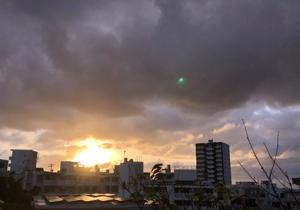

うるがいの話 ある日
最新: 朝たん【うるがいの話 ある日】とは 一日だけのプログです
『うるがいの話』の最新一日だけのプログで、通信料が少なく経済的だ。カニの画像をクリックすると全ての日付が載る『うるがいの話』サイトを表示します
|
|
【うるがいの話】 うるがい(ｳﾙｶﾞｲ urugai)とは、『もずくがに』の名前でとても大きくなります。 |
|---|---|
|
|
【カミマヤーの話】 猫のことを方言でマヤーといいます。カミマヤーとは、神の猫のことです。 |
|
【タナガーの話】 たながー（ﾀﾅｶﾞｰtanagaa）とは手長えびのことで、何種類かあり大きいのは車 エビぐらいになります。 |

|
【ぶながぁの話】 ぶながー(bunagaa)とは、赤い髪の毛、赤い身体、そして身長は１ｍ２０ｃｍ ぐらい、川の蟹を食べているの目撃された。場所は沖縄県国頭郡大宜味村のと ある村僕の隣近所に住んでいる爺さんから、聞いた話です。 |
|
|
【ギーマの話】 ギーマ(giima)とは、山原の里山に咲くスズランに似た、 花を付けます。実は食べられます、 気が付くと口の周りが紫になっています。 |
2021年12月19日 (日）朝たん
17:39

一月前ＮＨＫ『ガッテン！』の「朝たんで筋肉を増やす方法」を見た翌日から
朝ごはんに、たんぱく質を採るため卵とソーセージを追加した。そして、３週
間ほど前から、水分補給のためにお汁（殆どインスタントだが）を飲むように
食事改善をした。・・・少し太った、うう。ただ、疲れなくなったし、排尿の
量が多くなった。朝食をとった後、走る生活を習慣としていたため、納豆とお
椀の半分のごはんと僅かなおかずだけで済ませていたが、今は毎朝ホテルの朝
食並みの量である。前に友達から『うつ消しごはん』を勧められ、そして保健
師からは水分をとるように！と言われたが、なかなか実践できなかった。
１７時３６分 ビットコインの総資産 ￥１５、６１７